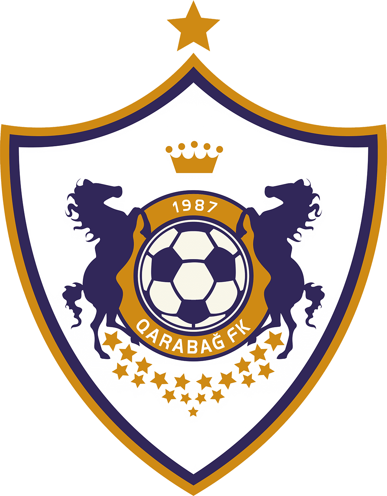
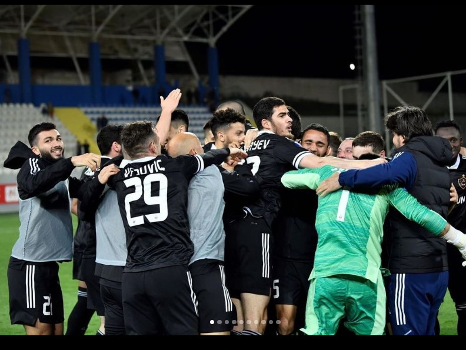

Karabağ FK
Karabağ Ağdam, Ağdam kentinde kurulmuş bir Azerbaycan futbol kulübü. 1993 yılında Karabağ'ın Ermeniler tarafından işgal
edilmesinden sonra kulüp sürgün edilmiştir. Bu yüzden Karabağ, sportif etkinliklerini Ağdam kenti işgalden kurtulana kadar
Bakü'de devam ettirdi. Ağdam kenti 18 Ekim 2020'de işgalden kurtulduktan sonra Karabağ artık maçlarını İmaret Arena'da
geçirmeyi planlıyor.
1951 yılında kurulan Karabağ, 1992 yılında Azerbaycan Premyer Ligası'nın kurucu üyelerinden olmuştur. Bir sezon sonra ilk
şampiyonluğunu alan kulüp henüz Bakü'ye taşınmamıştı. Karabağ, Neftçi Bakü ile Azerbaycan Premyer Ligası'nın tüm sezonlarında
yer almıştır.
Karabağ evindeki maçlarını Bakü'de, Avrupa ligi maçlarını Tofik Behramov Stadyumu'nda, Lig maçlarını ise Azersun Arena'da
oynamaktadır.
2014 yılında ligde önceki şampiyonluğundan 21 yıl sonra şampiyon olmuştur. Ayrıca üç kez Azerbaycan Kuboku'nı almıştır.
Aynı yıl play-offlarda Twente'yi eleyip 2014-15 UEFA Avrupa Ligi gruplarına kalmıştır. 2017-18 UEFA Şampiyonlar Ligi'inde
3 ön eleme turu geçerek grup aşamasına kalma başarısını gösterdi ve böylece Şampiyonlar Ligi'ne katılma başarısı gösteren
ilk Azerbaycan takımı olmuştur.

Karabağ FK Tarihçesi
İlk Yılları
Karabağ Futbol Kulübü'nün kurulma tarihi 1950'li yılların öncesine dayanmaktadır. 1951 yılında Ağdam şehir stadının
inşasından sonra profesyonel bir spor kulübü olması için ciddi işler yapıldı. Kurulduğu günden sonra bir süre "Mahsul"
adı ile mücadele eden "Karabağ" ilk kez 1966 yılında Azerbaycan SSC Şampiyonası'nda yer aldı.
Şampiyonayı 4. sırada tamamladı.
Karabağ, dört yıl üst üste yerel şampiyonaya katıldı. Bu yıllar boyunca en iyi sonucunu 1968 yılında ikinci olarak aldı.
Ancak, 1968 yılından sonra ilgisizlik ve finansal desteklerin eksikliği nedeniyle uzun süre yerel şampiyonaya katılamadı.
1977 yılında kulüp Şafak adı ile tekrar futbola döndü. Şafak, 1982 yılına kadar Ağdam futbolunun tek temsilcisi oldu.
1982 yılından 1987 yılına kadar ise kulüp "Kooperator" adı ile şampiyonalara katıldı. 1988 yılında Azerbaycan,
SSCB bünyesinde iken Karabağ, ilk defa Azerbaycan SSCB şampiyonu oldu.
Son Yılları
2008 yılında teknik direktör Rasim Kara'nın 2008-09 sezonunun ilk haftasından hemen önce Hazar Lenkeran'a geçmesiyle
Azerbaycanlı eski futbolcu Kurban Kurbanov takımın başına getirildi. Kurban Kurbanov önderliğinde Karabağ, Azerbaycan
futbolundaki yaygın stratejisindeki yabancı oyuncu lehine yapılan imzalardan sakınarak daha çok yerli futbolcu lehine
hareket etti. Kurbanov takımın oyun tarzına daha çok kısa paslar, topla daha çok oynama ve oyuncuların pozisyonlarını
değiştirme gibi özellikler ekleyerek tiki-taka benzeri bir oyun oynatmaya başladı.
Karabağ, 2009-10 UEFA Avrupa Ligi'nde 2. ön eleme turunda Norveç kulübü Rosenborg'u ve 3. ön eleme turunda Finlandiya
kulübü Honka'yı eledi. Böylece Kurbanov, Azerbaycan futbolunda Avrupa'da en başarılı olan teknik direktör oldu.
2012 yılında kulüp, 2010-11 UEFA Avrupa Ligi 1. ön eleme turunda Bakü'de Metalurg Skopje'yi 4-1 yenerek Avrupa'da en
farklı galibiyet alan Azerbaycan takımı oldu. 3. ön elemede Wisła Kraków'u eleyerek play-offlara yükseldi.
2011 yılında Gargždai'de Banga Gargždai takımını 4-0 yenerek rekorunu geliştirdi.
2011-12 sezonunda ligi dördüncü sırada bitiren Karabağ Avrupa şampiyonalarına katılamadı. Bir sezon aradan sonra 2013
yılında üçüncü kez katıldığı Avrupa Ligi'nde play-offlara kaldı.
2014 yılının Mayıs ayında lig şampiyonluğunu ilan eden Karabağ en son 21 yıl önce şampiyon olmuştu. Bir ay sonra UEFA
Şampiyonlar Ligi 3. ön eleme turunda Red Bull Salzburg'u kendi evinde yendi. Ağustos 2014'te Avrupa Ligi play-off turuna
kaldı. Böylece son beş sezonda dördüncü kez Avrupa Ligi'nde yer almış oldu.
Karabağ, play-offlarda Twente'yi eleyerek gruplara kaldı. Neftçi Bakü'den sonra Avrupa Ligi gruplarına kalan ikinci
Azerbaycan takımı oldu. 23 Ekim 2014 tarihinde Dnipro Dnipropetrovsk takımında deplasmanda 1-0 yenerek Avrupa Ligi
gruplarında galibiyet alan ilk Azerbaycan takımı oldu.
Karabağ,bir sonraki sezonda şampiyon olarak UEFA Şampiyonlar Ligi 3. ön eleme turuna katıldı.Celtic'e mağlup olarak
UEFA Europe League Play-off turuna düştü.Young Boys'u yenerek üst-üste 2 kere UEFA Europe League Grup aşamasına katıldı.
Karabağımızın Puan Durumu
| Topaz Premyer Ligi | Takım | Galibiyet | Beraberlik | Mağlubiyet | Puan |
|---|---|---|---|---|---|
| 1 | Karabağ | 19 | 6 | 1 | 63 |
| 2 | Neftçi | 15 | 5 | 6 | 50 |
| 3 | Zira | 12 | 7 | 7 | 43 |
| 4 | Kabala | 11 | 8 | 7 | 41 |
| 5 | Sabah | 12 | 3 | 11 | 39 |
| 6 | Şamahı | 5 | 6 | 15 | 21 |
| 7 | Sumkayıt | 4 | 6 | 16 | 18 |
| 8 | Sabail | 4 | 3 | 19 | 15 |
Başarılar

22 Mayıs 2015 itibarıyla Karabağ, Azerbaycan Premyer Ligası, Azerbaycan Kuboku ve Azerbaycan Süper Kupası'nı kazanarak sezonu üç
kupayla tamamlamıştır. Ligde Bakü dışından şampiyon olan ilk takım olmuştur. Neftçi Bakü ile beraber Azerbaycan Premyer Ligası
kurulduğundan beri hiç küme düşmemiştir.
Azerbaycan Premyer Ligası
Şampiyon (8): 1993, 2013-14, 2014-15, 2015-16, 2016-17, 2017-18, 2018-19, 2019-20, 2021-2022
Azerbaycan Kuboku
Şampiyon (6): 1993, 2005-06, 2008-09, 2014-15, 2015-16, 2016-2017
Azerbaycan Süper Kupası
Şampiyon (1): 1994
Azerbaycan SSC Millî Futbol Ligi
Şampiyon (2) - 1988, 1990
Azerbaycan SSC Millî Futbol Kupası
Şampiyon (1) - 1990